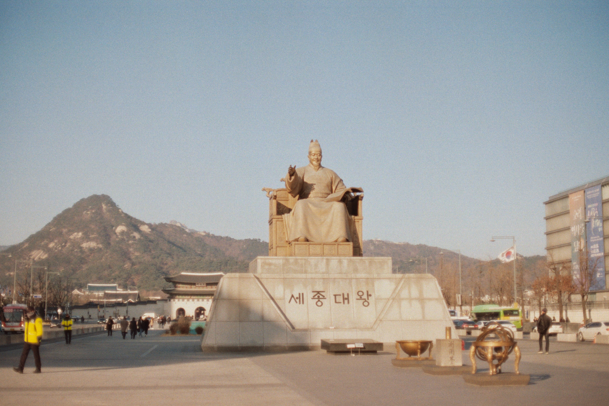

Between History and City
A small photography series captured around Gwanghwamun, where historic architecture and modern city life meet.
About
This series captures quiet moments around Gwanghwamun through a soft, film-inspired visual style. I focused on the contrast between historic landmarks, city streets, and everyday movement.